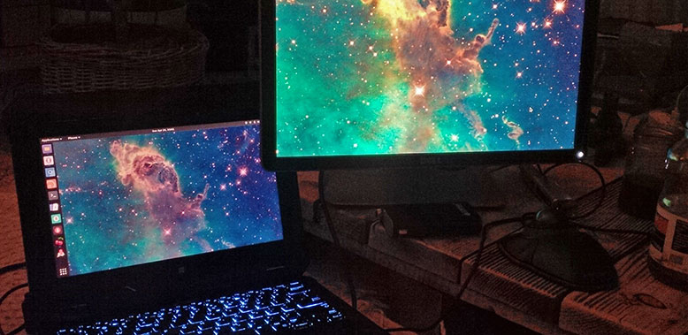

My current game development stack
For years I was using MacBooks as my primary computers for everything. But as I gain experience in Linux I started to use more open/free software. Here are my current setup both in hardware and software. It’s definitely not final and I still perfecting it.

Hardware
When I’m outdoor I mostly use only the laptop. But when I’m home or doing some 48h hackathon I use all of those:
- Dell 7204 Rugged Extreme (i5/8/256)
- Dell P1914S (4:3, 1280x1024)
- Vortex Poker III (keyboard with Cherry MX Browns)
- Kensington Orbit (trackball)
The best part is that Dell 7204 have touch screen that can be flipped and the whole laptop can transform into (rather bulky) tablet. For pixel artist this is a dream machine. I no longer need to bringing my Wacom tablet anymore! Also touch in linux is now supported very well so I use my fingers a lot in day-to-day situations too.
I really like the 4:3 monitors. They’re small on desk but have lot of working space. They have the best medium to edit A4 documents. Or any code. Or photos. They are just perfect.
For any coder good keyboard is a main accessory. Mechanical keyboards are what I really need to do lot of writing. I choose Pok3r because it’s 60% keyboard - small but have all the buttons I really use.
Lot of peoples ask me about trackball - why I use it, is it better, etc… What I can say? I really don’t know. I never use any so I just bought one to test if it’s something for me or not. Turns out I fall in love from day one :) But to this day I can not say why. I just like to use it.
Software
This is the place where I constantly find something new. The last thing that I relay on that’s not free nor open is Adobe Photoshop.
Base
Standard linux setup. I use Debian-based distros for some time but when I discovered Arch I never get back. For windows management I love XFCE as it's fast and essential. But now, as I have touchscreen the only enviroment that supports it is GNOME. And GNOME is really fine. But slow...
- Linux (Arch/Antergos)
- GNOME (best for touch monitors)
Development
Nothing spectacular in this area. I use vim/nano when doing console based stuff. But to do actual code there is nothing better than Sublime!
- Godot Engine
- SublimeText 3
- Git (Terminal/GitKraken)
- gFTP
Graphics
I have Adobe CC licence for my MacBooks (Photoshop&Lightroom) but on Linux there is no alternative. Happily CS2 works in Wine good enough so I can now do all my work on Linux machine.
- Adobe Photoshop CS2 @Wine (main tool)
- Aseprite (pixel art)
- Scribus (print stuff)
- FontForge (fonts)
- Blender (modeling/rendering)